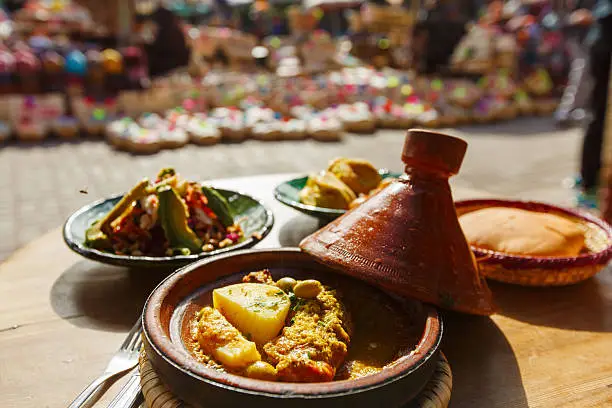

Kycklingtajine
Mör kyckling med citron, oliver och traditionella marockanska kryddor.
159 krVälkommen till Le Kech. Upplev traditionella marockanska smaker och rätter lagade med kärlek.
Se vår meny
Måndag - Fredag: 11:00 - 22:00
Lördag - Söndag: 12:00 - 23:00
Hyllie 10
211 20 Malmö